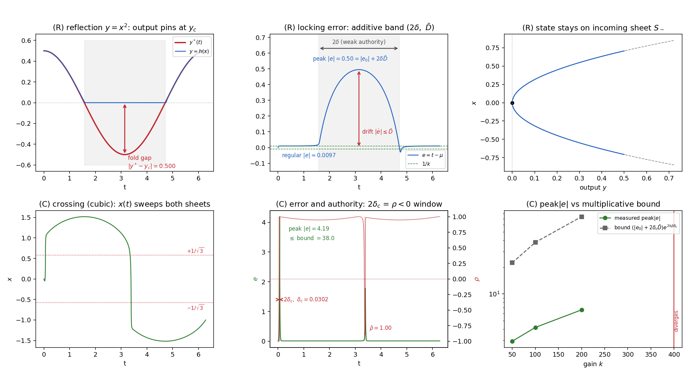

Core control-theoretic results (kernel lemma, tracking bounds, Filippov sliding-mode analysis at folds) are formalized and machine-checked in Lean 4 with Mathlib.
Abstract
Input–output feedback linearization fails at decoupling singularities, where the decoupling matrix loses rank, the relative degree is lost, and the linearizing control becomes unbounded. This paper develops a singularity-robust trajectory-tracking controller for square nonlinear control-affine systems that tracks through isolated decoupling singularities with bounded control. The method recasts tracking as real-time arc-length homotopy continuation, equivalently a continuous-time Newton/Davidenko flow, and replaces the inverse decoupling matrix by the least-norm Moore–Penrose solution of an augmented matrix $A=[Λ\mid b]$, where $b$ is the homotopy direction. A transversality condition $w^T b \ne 0$, with $w$ in the left null space of the decoupling matrix, keeps the augmented matrix full row rank through a generic rank-one loss. The resulting flow agrees with feedback linearization away from the singular set, tracks with $O(1/k)$ error, and re-locks after each crossing. The theory also characterizes the reflection-versus-branch-crossing dichotomy at Whitney folds and relates the reflection case to a Filippov sliding mode. Extensions cover dynamic relative-degree-one minimum-phase systems and arbitrary relative degree via filtered-error reduction. The core results are formalized and machine-checked in the Lean proof assistant, including the multi-parameter (higher-corank) repair criterion, the uniqueness of the sliding motion at the fold, and the machine-checked treatment of Filippov solutions. Simulations include a redundant 2-DOF manipulator, relative-degree-one and relative-degree-two plants, and a dual-active-bridge series-resonant DC/DC converter, where the method performs bounded inversion across buck/boost and resonance singularities while preserving zero-voltage soft switching.
Problem
Input-output feedback linearization fails at decoupling singularities, where the decoupling matrix loses rank and the linearizing control becomes unbounded. The goal is a tracking controller for square control-affine systems that passes through isolated decoupling singularities with bounded control.
Approach
Tracking is recast as real-time arc-length homotopy continuation, equivalently a continuous Newton/Davidenko flow. The inverse decoupling matrix is replaced by the least-norm Moore-Penrose solution of the augmented matrix [Λ | b]. A transversality condition w^T b ≠ 0 keeps the augmented matrix full row rank through rank-one loss. The core results are formalized in Lean 4 over Mathlib: the kernel lemma and its multi-parameter generalization, the tracking bounds, and the sliding-mode/Filippov analysis at Whitney folds.
Results
The flow agrees with feedback linearization away from singularities, tracks with O(1/k) error, and re-locks after each crossing. Reflection at folds is characterized as a Filippov sliding mode. All formalized statements are fully proved using only Lean's standard axioms. Simulations include a 2-DOF manipulator and a dual-active-bridge DC/DC converter.

Figure 5: Numerical verification of the reachability and excursion propositions on scalar folds (all quantities measured from the continuation flow, k=100 unless swept). Top row — reflection , min-type fold y=x^{2} under \rho\geq 0 , reference y^{*}=0.5\cos t dipping to the infeasible side y<y_{c}=0 (shaded): (R1) the output y (blue) pins at y_{c} while y^{*} (red) is infeasible, the red double-ar